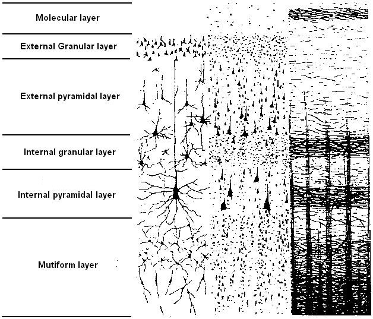
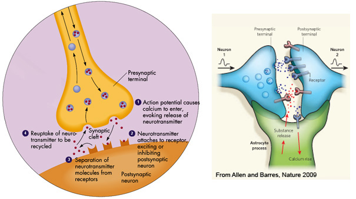

Basis of Neurophysiology
Neurons, as other cells, present a soma with a cytoplasm, organells (Golgi apparatus, mitochondria, etc) and a nucleus with DNA. In addition to neurons, the brain contains glial cells, including astrocytes, oloigodendrocytes and micoglial cells.
Neuro-glia
The neuroglia is estimated to make up to 90% of brain cells. Most of glial cells and all neurons are derived from the neuroectoderm, i.e. glia and neurons have a common origin. One exception is the microglia; microglial cells which are part of the immune system.
For a long time, neuroglia has been described as a substrate supporting neurons. In this view, microglial cells look for damage and infection, engulfing cells and debrits. However, because of this role, it has also been implacated in synaptic remodelling during development. Oligodendrocytes (CNS) and Scwann cells (PNS) enwraps axons by there myelin-rich membrane, thereby speeding up the conduction of electrical impulses (see more on saltatory conduction). Finally, astrocyte contribute to the homeostasis in the brain by providing energy and substrate of neuro-transmission.
Recent works demonstrated that the neuroglia is part of the nervous system as such and plays an active role (Kettenmann and Verkhratsky, TIN 2008, vol 31). For instance, some astrocytes can re-enter the cell cycle and produce all types of neural cells, from neurons to macroglial cells. Others demonstrated that Oligodendrocytes and Schwann cells, not only have an important role as isolators (both types of cells produce myelin permitting the saltatory propagation of action potentials), but also are equipped with transmitter receptors and are able to sense neuronal activity allowing to control oligodendrocytes differentiation and the state of myelination.
Astrocytes: the 3rd player

image credit: http://www.coloradocollege.edu/IDProg/Neuroscience/Cellular1-21.html
- Astroglial cell are an important homeostatic cellular element in the brain because astrocytes control the brain environment by regulating the volume and composition of extracellular space and by controlling the barrier that separates the central nervous system from the rest of the body
- The architecture of the grey matter is defined by the astrocytes because each protoplasmic astrocyte occupies its own territory. Loss of this specific organization might, incidentally, be involved in various forms of brain pathology.
- Astrocyte are an essential part of a neuronal–glial–vascular unit, and studies showed that astrocytes control the local blood flow by releasing molecules acting on the dilatation or constriction of arterioles (Gordon et al, Nature 2008, vol 546). Astrocytes therefore supply neurons with energy substrates, which is essential for information transmission between neurons. Without the lactate provided by astrocytes (lactate is transformed in pyruvate in neurons which itself is oxidated by neural mitochondria) synaptic transmission is altered (Rouach et al, Science 2008, vol 322) which can lead to e.g. memory deficits (Suzuki et al, Cell 2011, vol 810).
- Astroglia is also involved in shaping synaptic connectivity in the brain by controlling the genesis and maintenance of synapses (thus, providing morphological homeostasis of synaptic connectivity) and by affecting synaptic strength and plasticity (Araque et al. TIN. 1999, vol 22). It has been shown that astrocytes are involved in Long Term Potentiation (Henneberger et al Nature 2010, vol 463). In fact, astrocytes release gliotransmittors in the synaptic cleft even when there is minimal neurotransmission therefore changing the strengh of neurotransmission (Panatier et al, Cell 2011, vol 146). More importantly, D-serin released by the astrocytes fixate on NMDA receptors just like glutamate does, thereby actively participating to synaptic plasticity (Papouin et al Cell 2012, vol 150).
- Activity among astrocytes can spread in the form of Ca2+ waves and they can generate spontaneous Ca2+ increases that correlate with the release of glutamate. The network of astrocytes and oligodendrocytes is interconnected in a complex manner by gap junctions so that molecules can be excanged offering a new possibility of analogue information processing in the brain.
Neurons
What is distinguishing a neuron from other cells is its ability to transmit rapid electrical signals in the form of action potentials. A 'classical' neuron shows a soma and neurites; dendrites (input) and one axon (output). The transfer of information between neurons occurs at specialized junctions called synapses (fig 1.)
Figure 1. Example of neuron with dendrites and one axon (image credit: http://www.enchantedlearning.com/subjects/anatomy/brain/Neuron.shtml)
Neuron Types & Organization
It exists several types of neurons that can be classified from their morphology (pyramidal, basket, granular, stellar ...) or their function (excitatory vs inhibitory). Indeed, one can also link morphology and function distinguishing thorny neurons (pyramidal and stellar cells) that are excitatory and smooth neurons that are inhibitory.
Neurons are not set randomly in the neocortex. Instead, they are set in separate layers in such a way that one can distinguish 6 layers (fig 2.). This organization is specified by the horizontal white fibers (afferent thalamo-cortical and cortico-cortical fibers and efferent fibers, i.e. axons).
- Layer I (molecular): the cell density is low, cells are called fusiform and are set horizontally. Axons project within this layer (local connexions).
- Layer II (external granular): this layer is characterized by a high density of small cells: pyramidal cells that project onto deep layers and granular and basket cells. These cells receive input for deeper layers.
- Layer III (external pyramidal): most of pyramidal cells are located within this layer, their sizes vary from middle to big from the external (surface) to the internal (deep) part. Apical dendrites go to the layer I, whereas axons go outside the neocortex and form associative and commissural white fibers.
- Layer IV (internal granular): this layer contains many different cell types although dominated by smooth stellar cells. It receives thalamic fibers that form the external Baillarger stria.
- Layer V (internal pyramidal): it contains middle and big size pyramidal cells that project dendrites onto, respectively, layers IV and I. Axons go to sub-cortical nuclei, branching usually within the same layer.
- Layer VI (multiform): this layer contain mainly fusiform and pyramidal cells which axons project onto the thalamus and/or form associative fibers with neighbouring gyri (arched fascicles).

Figure 2. Organization of the neocortex in 6 layers.
Cortical columns
Cortical columns are cylinders of 200-500 micrometers diameters that constitute anatomo-functional entities. From an anatomical viewpoint, columns are volumes within which associative fibers synapses with cortical neurons. Cortico-cortical influx can reach all layers except the layer I. In addition, one cortico-cortical fiber can reach several columns and one column can receive connexions from other columns within the same cytoarchitectonic area or from different areas. Within primary sensorial areas, each column receives input from a specific thalamic neuronal population and this organization is kept on in the subsequent cortico-cortical connexions. Similarly, each column project back onto their inputting thalamic population.
From a functional viewpoint, a column shows similar neurons, i.e. all neurons are activated by the same kind of stimuli and they respond in a similar fashion to their preferred stimulus. In addition, their receptive fields are similar in size, location and organization. For each cortical column, one given afferent influx elicits one given efferent firing. One interesting characteristic is that neighbouring columns show close prefered stimuli and receptive fields so that they can be grouped together to form a hypercolumn that spans a range of stimuli and a given external fields (sensorial, visual ..).
Neuronal membranes and ion channels
Communication between neurons depends upon the properties of neuronal membranes. When substances are allowed to diffuse freely, they tend to diffuse from areas of high concentration to areas of low concentration (osmosis law). That is, they move along a concentration gradient until equilibrium is reached.
Neuronal membranes are 10nm-thick liquid-crystal bilayer of phospholipids that preserve differences between the intra and extracellular environments, and thus preventing the freely diffusion of molecules. They do, though, have embedded proteins that form ions channels through which some ions, such as sodium (Na+), chloride (Cl-), potassium (K+) and calcium (Ca2+), can diffuse. The ion channels are selective so that only some species of ions can pass and others cannot. However, such channels, although selective, do not go against the concentration gradient. To do so, neuronal membranes use selective pumps. These pumps are transmembrane proteins that transport ions bidirectionnaly. For example, the sodium-potassium pump (fig 3.) uses transporter molecule that forces 3Na+ out of the cell and picks up 2K+ into the cell on the return trip. Due to these pumps, neurons at rest show greater concentration of K+ inside the cell than outside and greater concentration of Na+, Cl- and Ca2+ outside the cell than inside. Any transient change in the permeability of the membrane will cause an influx or an efflux of these ions as the system attempts to eliminate the concentration gradient and establish equilibrium.
Figure 3. The sodium-potassium pump (image credit: http://science.halleyhosting.com/sci/ibbio/cells/notes/ch6/activeT.htm)
Generation of Action Potentials
Because ions have electrical charge, the concentration gradient creates an electrical potential (about -70 millivolt) between the inside and the outside of the cell. Movement of ions across the membrane are thus governed by both chemical and electrical gradients.
The presynaptic process of the axon releases neurotransmitters in the synaptic left (fig 4.) that interact with postsynaptic membrane receptors that gate ion channels. For example, the glutamate (the most common neurotransmitter ~90%) opens postsynaptic Na+ channels. The influx of Na+ decreases the electrical potential at the channels location. This local depolarization is referred to as an excitatory postsynaptic potential (EPSP). Other neurotransmitters show, on the opposite, inhibitory effects. For example, the GABA (gamma aminobutyric acid) interacts with receptors to open Cl- and K+ channels. The influx of Cl- or exflux of K+ results in an increase in the resting potential at the channels location. This local hyperpolarization is referred to as an inhibitory postsynaptic potential (IPSP).

Figure 4. The synaptic cleft
A single EPSP or IPSP cannot generate an action potential. After a PSP newly opened channels will close and the pumps will restore the concentration and electrical gradients. However, if a neuron receives simultaneously or sufficiently close in time, a barrage of EPSPs and IPSPs through its dendritic tree and soma, the integration of depolarizations and hyperpolarizations might influence the net polarization of the axon hillock (where the axon emerges from the soma). If the summation of EPSP and IPSP decreases below a threshold voltage (about -40mV), large numbers of voltage-gated Na+ channels will open and there will be concomitant large influx of Na+ into the cell. This depolarization spreads down the axon, opening more voltage-gated channels farther and farther down the membrane, corresponding to what is called an action potential (AP).
More recent model of synapses include astrocytes. The tripartite synapse (Allen and Barres, 2009) include communication between neurons but also between neurons and astrocytes. Individual astrocytes make contact with and enshealth thousands of synapses. Given this particular location, it has been proposed that astrocytes monitor and repsond to synaptic activity as evidenced by the fact that they possess many of the same neurotransmitter receptors than neurons. This leaves open the possibility of interastrocyte communication and modulation of the neural activity via astrocytes.
Action potential firing
Electrophysiological properties of neurons differ according to neurons types as they do not present the same membrane characteristics (different density of ions channels and pumps). For example, inhibitory GABA interneurons show a higher AP frequency, faster repolarization than pyramidal cells and do not show adaptation phenomenon during sustained stimulation.
These differences between neuron firings led to classify neurons into three groups: regular spiking, fast spiking and intrinsically bursting (table 1).
Characteristics |
Physiological group | ||
|---|---|---|---|
| regular spiking | intrincicaly bursting | fast spiking | |
| Morphology | pyramidal and stellar cells |
pyramidal and stellar cells | smooth cells |
| Location | layers II to IV | layers IV to V | layers II to IV |
Action potential |
- fast - slow |
- fast - slow |
- fast - fast |
| Post potential | post hyperpolarization and post depolarization | post hyperpolarization and post depolarization | post hyperpolarization |
| Adaptation | yes | variable | no |
| Bursting | no | yes | no |
| Function | excitatory | excitatory | inhibitory |
Table 1. Physiological groups of neurons accoring to their spiking characteristics